Red neuronal guiada por física
Reconstruir el registro de densidad de un pozo con una red guiada por física
Los modelos de machine learning para registros de pozo tienen un punto débil conocido: generalizan mal a pozos que no vieron al entrenar. Este proyecto explora una técnica de frontera para atacar ese problema —una red neuronal informada por física (PINN)— sobre un caso concreto: reconstruir la curva de densidad (RHOB) de un pozo a partir de las otras curvas que sí se midieron.
La idea es darle a la red, además de los datos, una relación física conocida del dominio —la de densidad–neutrón— como guía, y comprobar si eso mejora la generalización con un benchmark honesto: entrenar en unos pozos y evaluar en otros que nunca vio. Este proyecto nació de revisar papers —uno reciente reporta hasta 3× menos error en pozos ciegos con esta idea— y de querer reproducir la técnica a mi escala. Abajo lo cuento: el problema, qué creo que lo causa y cómo lo abordé.
Ver el repositorio Ir a resultados
El campo y los datos
Los datos salen del Kansas Geological Survey, que publica archivos LAS de pozos reales. De ahí tomé el campo Kraft Prusa: 30 pozos limpios y unos 154 000 registros en profundidad (en pies). Cada pozo trae varias curvas medidas a lo largo del pozo; uso cinco como input —rayos gamma (GR), dos resistividades (RT, RILM), porosidad neutrón (NPHI) y potencial espontáneo (SP)— para predecir la densidad (DEN, o RHOB).
La pista física es una relación conocida en petrofísica: la densidad y la porosidad neutrón están correlacionadas —a más porosidad, menos densidad—. No es una ley exacta, pero es real, y es justo lo que el modelo va a usar como guía.

Limpiar los datos antes de entrenar
Los registros crudos no vienen listos para un modelo, y cada problema tiene una causa física o instrumental. La porosidad neutrón a veces está en porcentaje y no en fracción; herramientas viejas marcan los valores nulos con números enormes (10⁹ Ohm·m) en vez de dejarlos vacíos; y donde el pozo se derrumba —lo que se llama washout— varias curvas quedan distorsionadas. El pipeline corrige cada cosa, paso a paso:
- La porosidad neutrón pasa de porcentaje a fracción (lo detecto por la unidad o por la mediana).
- La resistividad va en escala
log₁₀—es log-normal por física— y los valores centinela (>10⁶) se descartan. - Los outliers se corrigen por consenso: cinco detectores votan y cambio el dato cuando dos lo identifican como outlier.
- Las zonas de derrumbe (las mide el caliper, el sensor del diámetro del pozo) y las densidades imposibles (fuera de 1.5–3.1 g/cc) se filtran.
- Cada curva se normaliza pozo por pozo, para que ningún pozo «contamine» a otro.


Cómo se evalúa, y por qué así
El benchmark es el corazón del proyecto. Para medir si el modelo sirve en un pozo nuevo no basta con mezclar todo y partir al azar: las medidas de un mismo pozo se parecen entre sí, y un split aleatorio dejaría tramos del pozo de prueba dentro del entrenamiento. El resultado saldría inflado: métricas optimistas que no dicen nada sobre el rendimiento en un pozo realmente nuevo.
Uso Leave-One-Well-Out (LOWO): entreno con todos los pozos menos uno y evalúo en el que queda fuera, rotando por los 27 pozos. Además aparté tres pozos desde el inicio que el modelo nunca ve —ni para entrenar ni para ajustar nada—: la prueba más honesta que tengo, con datos completamente ciegos.


La red guiada por física
Un PINN modifica la loss —lo que la red minimiza al entrenar— para incluir, además del error contra el dato medido, un segundo término que penaliza alejarse de una relación física conocida. Aquí esa relación es la de densidad–neutrón: es robusta y no depende de parámetros que haya que calibrar campo por campo. El peso $\lambda$ regula cuánta física entra, y tiene una propiedad cómoda: con $\lambda=0$ el segundo término desaparece y recupero exactamente el modelo base. Eso convierte la comparación «con» vs «sin» física en una ablación controlada —cambio una sola cosa y mido su efecto.
Los dos términos son el mismo tipo de error. El primero compara la densidad que predice la red, $\hat{\rho}$, contra la medida real, $\rho$. El segundo la compara contra la densidad que esperaría la física a esa profundidad, $f_\phi$ (el peso $w_i$ lo explico enseguida).
¿Y de dónde sale $f_\phi$? No la inventé: la calibré con los datos. Sobre los 27 pozos de entrenamiento ajusté por mínimos cuadrados —una regresión— la densidad contra la porosidad neutrón. Pero una sola variable se queda corta: en las arcillas, donde el rayo gamma (GR) es alto, la porosidad neutrón «miente» —la arcilla tiene mucha porosidad aparente pero densidad intermedia— y eso aplana la relación. Así que añadí un término de interacción, NPHI×GR, que recoge ese efecto de la litología:
Los coeficientes $A=-0.556$ y $D=0.086$ son el resultado de esa regresión, en el espacio ya normalizado de los datos (no en g/cc), y no hay término independiente: la normalización centra todo en cero, así que la recta pasa por el origen. El término de interacción sube el ajuste de $R^2=0.330$ a $0.338$. Es una relación débil —explica algo más de un tercio de la variación—, y me parece bien que lo sea: no quiero que la física mande, solo que oriente.
Queda el peso $w_i$. La relación física no es fiable en todas partes: donde el pozo está derrumbado (washout) la densidad medida es dudosa, así que forzar la física ahí sería corregir al modelo con un dato malo. Por eso pondero el término físico por el caliper —el registro del diámetro del pozo, medido y disponible en los 30 pozos—: por pozo, $w_i$ va de 1 donde el hueco está en calibre (DCAL en el percentil 25) a casi 0 en derrumbe severo (percentil 90), y los intervalos claramente derrumbados se descartan por completo. Esa selectividad es lo que me deja subir $\lambda$ sin estropear los pozos más difíciles.
Con todo armado, barrí un rango de valores de $\lambda$ sobre los 27 pozos. Los mejores resultados están en $\lambda=0.5$: es el valor que ayuda a más pozos —22 de 27— sin perjudicar a los demás. (λ=1.0 baja un pelo más el error medio, pero mejora menos pozos.)

Resultados
En la evaluación LOWO (27 pozos), pasar de «sin física» a «con física» baja el error medio (MAE) de 0.140 a 0.135 g/cc y sube el $R^2$ de 0.276 a 0.327, mejorando 22 de los 27 pozos. Está bien, pero la prueba que de verdad me importaba son los tres pozos ciegos: los que aparté al principio y el modelo no vio nunca, ni para entrenar ni para ajustar nada.
Aquí hay una distinción que vale la pena separar, porque ayuda a ver qué aporta el modelo y qué aporta la física. Predije esos tres pozos de dos formas:
- Promedio de 27 modelos (ensemble): predigo cada pozo ciego con los 27 modelos de LOWO y promedio. Promediar reduce la varianza, así que suele dar el mejor número.
- Un solo modelo: entreno un único modelo con los 27 pozos y predigo con ese. Es el escenario realista de despliegue —un modelo, no 27—.
Reporto las dos a propósito. El nivel absoluto de cada fila dice cuánto aporta el modelo (los datos); la mejora dentro de cada forma, de «sin» a «con» física, dice cuánto aporta el PINN. Como ese salto es positivo en las dos, la ventaja de la física no es un efecto de cómo junté las predicciones:
| Forma de evaluar (3 pozos ciegos) | Métrica | Sin física (λ=0) | Con física (λ=0.5) |
|---|---|---|---|
| Promedio de 27 modelos | MAE | 0.157 | 0.153 |
| Promedio de 27 modelos | R² | 0.233 | 0.271 |
| Un solo modelo (27 pozos) | MAE | 0.162 | 0.155 |
| Un solo modelo (27 pozos) | R² | 0.171 | 0.257 |


¿El límite es el modelo o el problema?
Mirando los números absolutos —un $R^2$ modesto incluso con física— me quedó una duda honesta: ¿el modelo se queda corto por falta de capacidad, o porque acertar un pozo nuevo es difícil de por sí? Para separarlo hice un diagnóstico simple: tomé un mismo modelo y le pedí que ajustara, por un lado, un pozo que sí vio durante el entrenamiento y, por otro, uno que no.
El contraste es claro: en el pozo conocido lo clava (correlación 0.88), en el desconocido cae. O sea, capacidad le sobra —la arquitectura no es el cuello de botella—; lo que cuesta es generalizar a un pozo nuevo. Y ese es justo el terreno donde una guía física aporta: no le da más potencia al modelo, le da una brújula cuando los datos no alcanzan.

Limitaciones e ideas para otros proyectos
Conviene ser claro con lo que este proyecto no resuelve —ahí está parte de lo interesante—:
- La física es débil y lineal. La relación densidad–neutrón explica solo un tercio de la variación ($R^2=0.338$) y es una recta. En zonas arcillosas o mixtas la relación real se curva, así que ahí la guía aporta menos —o estorba—.
- Un solo campo. Todo es Kraft Prusa, con una geología relativamente homogénea. Todavía no sé cuánto de esto sobrevive en otra cuenca.
- El $R^2$ absoluto es modesto. El PINN mejora respecto al modelo base, pero predecir densidad en un pozo nuevo sigue siendo difícil; esto no es un sistema de producción.
Y algunas semillas, por si salen otros proyectos de aquí:
- Una segunda física. Sumar la ecuación de Archie como segundo término físico —requiere calibrar sus parámetros ($m$, $n$, $R_w$) para el campo—.
- Validación cross-field. Entrenar en Kansas y evaluar en otra cuenca: la prueba de fuego de la generalización.
- Cuantificar la incertidumbre. No solo predecir la densidad, sino decir cuánta confianza merece cada predicción.
Lo que me llevo
Si tuviera que resumirlo en pocas líneas:
- Una pista de física, aunque sea débil (R²=0.338), sirve si se aplica solo donde es confiable. Apagarla en las zonas malas es lo que la hace útil.
- Con esa guía, el modelo mejora 22 de 27 pozos en LOWO y los tres pozos ciegos, con dos formas de evaluar independientes.
- La física ayuda más cuando hay menos datos: la ganancia es mayor con un solo modelo que promediando 27.
- El límite no es la capacidad del modelo sino generalizar a un pozo nuevo —y ese es justo el terreno donde una guía física aporta.
Es un proyecto de aprendizaje, así que cualquier comentario o mejora es bienvenida.
Referencias e inspiración
La idea de meter física en la función de pérdida para mejorar la generalización a pozos ciegos la tomé de este trabajo, que es el que reporta la mejora de 0.123 → 0.042 que menciono arriba (ellos predicen volúmenes de minerales y porosidad; yo adapté la idea a la densidad):
- Pothana, P. & Ling, K. (2025). Physics-integrated neural networks for improved mineral volumes and porosity estimation from geophysical well logs. Energy Geoscience, 6(2), 100410. doi.org/10.1016/j.engeos.2025.100410
Y la fuente de los datos:
- Kansas Geological Survey — archivos LAS públicos del campo Kraft Prusa. kgs.ku.edu